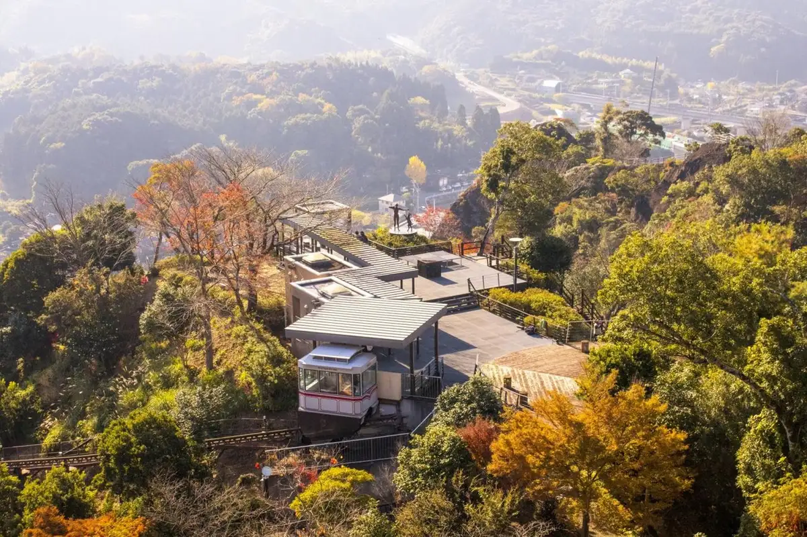
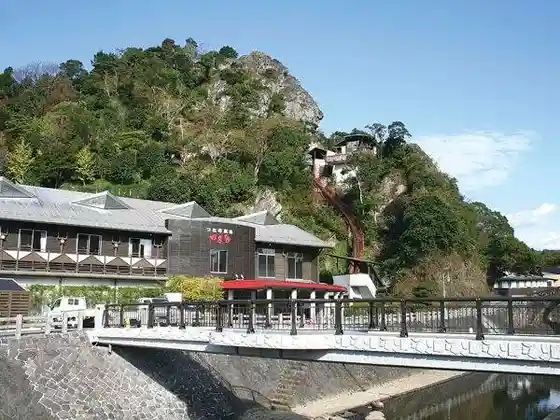
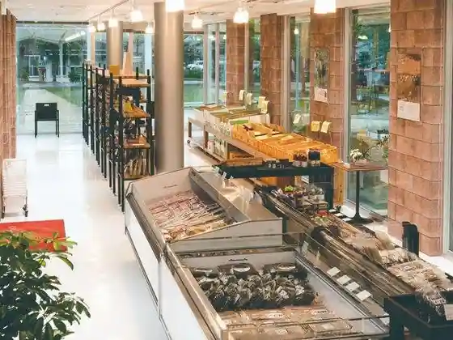
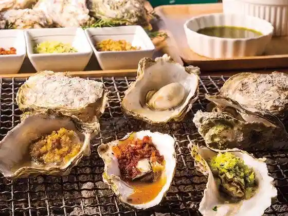
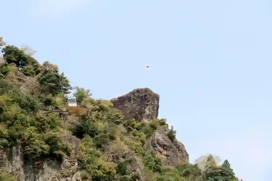

Japan / Kumamoto / Tsunagi
Tsunagi, Kumamoto
Tsunagi · Kumamoto
Tsunagi
Highlighted on the Kumamoto map.

Sights
Tsunagi Onsen Shiki Sai
Tsunagi, Kumamoto · 0966-78-4126 · Official / source link

Tsunagi Hyakka Do
Tsunagi, Kumamoto · 0966-78-2000 · Official / source link

Tsunagi Oisutabaru
Tsunagi, Kumamoto · 0966-78-2015 · Official / source link

Ju Ban Iwa
Tsunagi, Kumamoto · 0966-78-3111 · Official / source link

Maizuru Shiro Koen Tembo Tokoro
Tsunagi, Kumamoto · 0966-78-3111 · Official / source link
Tsunagi Art Museum
Tsunagi, Kumamoto · 0966-61-2222 · Official / source link
Kame Man Shuzo
Tsunagi, Kumamoto · 0966-78-2001 · Official / source link
Tsunagi Castle Ruins
Tsunagi, Kumamoto · 0966-78-3111 · Official / source link
Toru Hotoke
Tsunagi, Kumamoto · 0966-61-2222 · Official / source link
Kyu Akasaki Shogakko
Tsunagi, Kumamoto · 0966-78-3111 · Official / source link